Problema 63.-
Se tienen tres puntos A, B y C en una circunferencia c1 y se trazan las tangentes por A y
B que se cortan en el punto P.
La tangente por C corta a la recta AB en Q. Mostrar que PQ2 = PB2 + QC2
Demostración geométrica
|
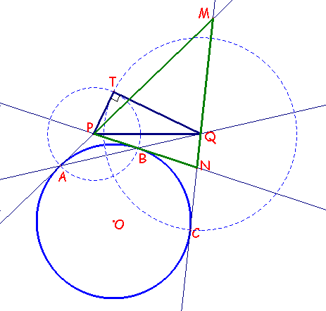 |
Del enunciado dado, se sigue que la recta AB es el eje radical de la circunferencia dada y de la que tiene como centro el punto P y de radio PA=PB.
Además, por la propia construcción de dichas circunferencias se sigue que ambas son ortogonales.
Así también la circunferencia de centro Q y radio QC cortará ortogonalmente a ambas circunferencias.
En concreto si nos detenemos en el contacto con la segunda obtenemos de modo inmediato la relación solicitada ya que el radio QC será también una tangente para la segunda circunferencia y así resulta que
PQ2 = QT2 + PT2 = QC2 + PB2 .
Nota:
Este problema presenta una interesante relación y asociación con el Teorema de Menelao y las relaciones métricas entre un triángulo y los círculos exinscritos e inscrito al mismo. Tan sólo en el caso en que los puntos A y B fuesen dados diametralmente opuestos entonces no existiría equivalencia entre el problema original y el que proponemos como alternativa. La resolución algebraica dista mucho de la elegancia de la geométrica por lo tediosa de aquella. Sin embargo la asociación del problema con otros hechos la hace, a mi juicio, al menos también interesante.
Demostración algebraica
Por el teorema de Menelao se determinarán la longitud de algunos segmentos interesantes que más adelante se usarán para la demostración algebraica de nuestra relación dada.
|
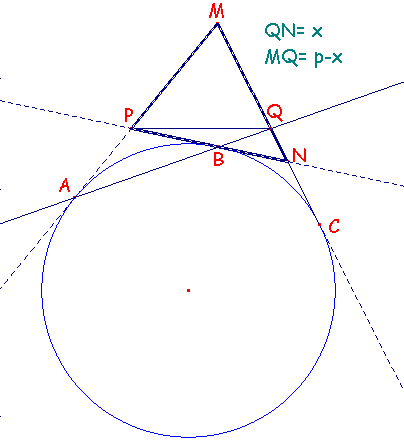 |
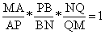 (s: semiperímetro del triángulo MNP; 2s= m+n+p) MA= s AP= PB BN= s- p NQ= x QM= p- x |
De este modo obtenemos
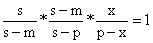
;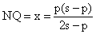
y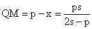
Luego entonces, los segmentos QC y PB miden los siguientes longitudes:
QC= QN + NC = x + s- p =
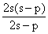
PB= s- n
Así llegamos a obtener la siguiente relación con sus cuadrados:
QC2 + PB2 =
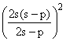
+ (s- n)2 (1)Faltará ahora encontrar el valor del cuadrado de la longitud del segmento PQ y verificar su identidad con la expresión (1).
Ahora bien, por el Teorema de Stewart podemos encontrar PQ2.
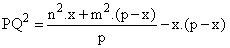
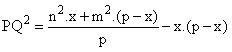
Ahora bien: m+n+p = 2s; m = (2s- p)- n;
m2 = (2s- p)2 + n2 - 2× (2s- p)× n
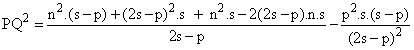
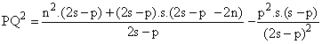
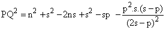
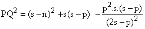
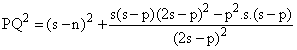
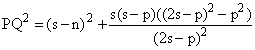
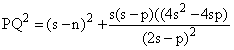
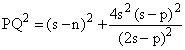
Y esta expresión última es idéntica a (1), c.q.d
Nota: En el caso de que la circunferencia fuese la inscrita, el procedimiento usado sería similar y
equivalente al usado anteriormente.
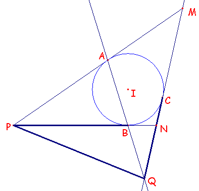
F. Damián Aranda Ballesteros.
A la memoria de mi amigo D. Francisco J. Anillo Ramos, con quien tanto compartí.